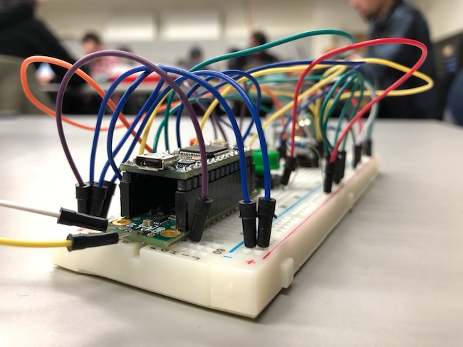

Environmental
Instrument
Environmental Instrument
The Environmental Instrument translates data from its surroundings into frequencies. This project was conceived when I wanted to create a non-standard notation piece that incorporated and element of randomness. The instrument using three sensors that control separate waveforms: a light sensor; a temperature sensor, and a motion sensor. The light sensor controls the most prevalent frequency, meaning that more light will equal higher frequencies, and less light will equal lower frequencies. Similarly, the temperature sensor changes its frequency positively with increased temperatures, and negatively with decreased temperatures. The pitch, roll, and yaw all control separate frequencies as well. Again, a negative or positive pitch, roll, and yaw, will control the frequencies respectively. These sensors are read and turned into frequencies by using a Teensy 3.2, and the Teensy audio library.
The project piece, which includes a diagram on how to build the instrument, a block of code, and a set of instructions for the performer to follow, can be found on my github. An example of this piece being performed can be seen on my Soundcloud account, Kokonama